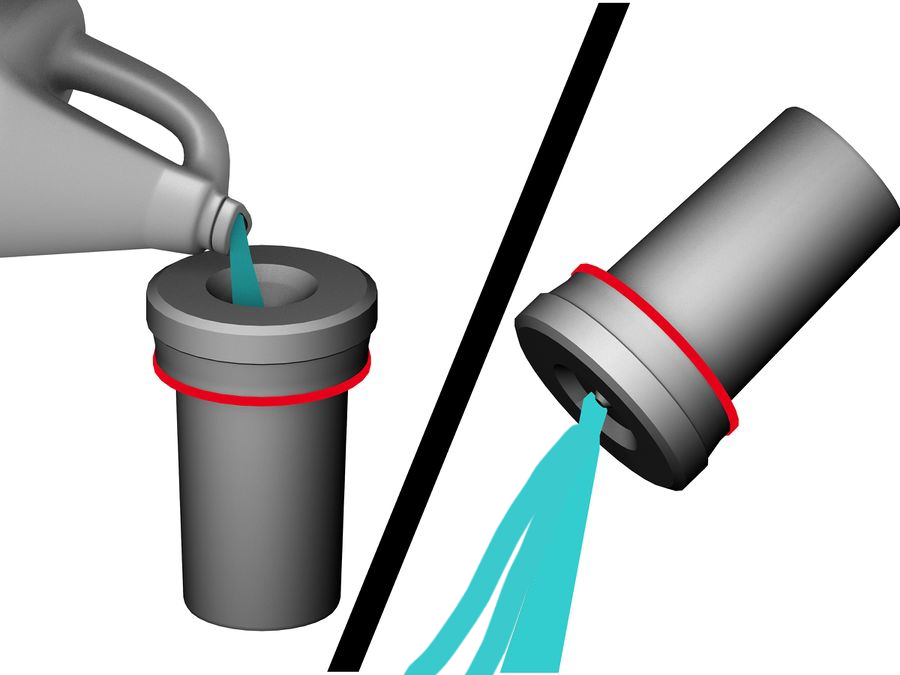
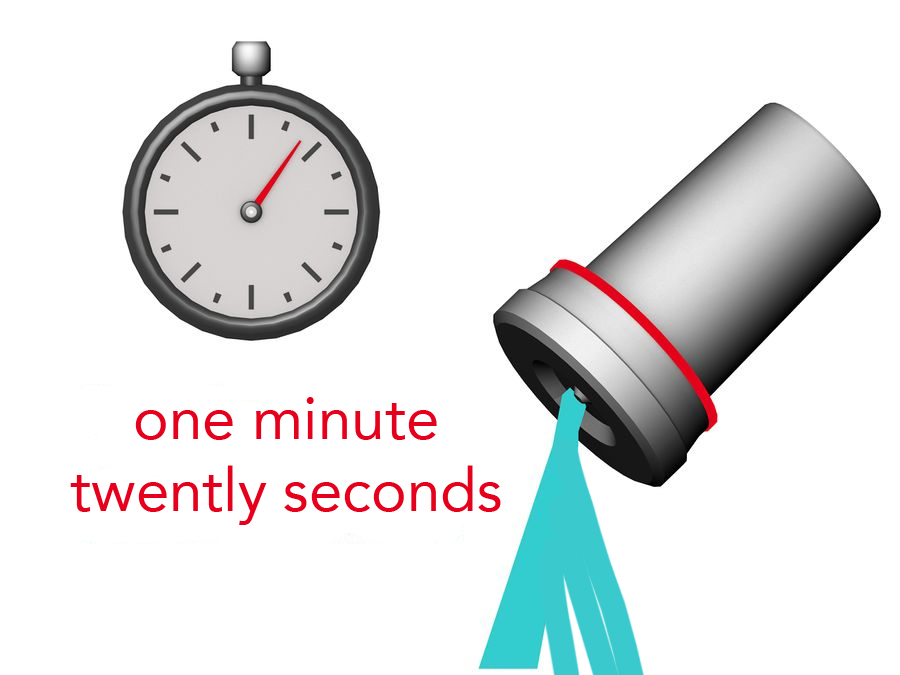

For the stop bath you can use water at 20 degrees Celsius.
Pour the water in the canister agitate for a couple seconds and pour out, repeat 4 times. Or, alternatively you can use the stop bath chemical. With stopwatch in hand, quickly pour the stop bath into the top of the developing tank until the tank is full. There is no need to dilute the stop bath more, so you can pour straight from the gallon jug. Start the stopwatch when you've filled the tank up. Once again, smack the tank against a counter a couple times to dislodge any bubbles. You are going to leave the film in the stop bath for 1 1/2 minutes. The purpose of the stop bath is to neutralize any remaining developer left on the film, and arrest the developing process.

When the stopwatch has reached 1 minute and 20 seconds, start pouring the stop bath out.
Some stop bath solutions, like the Kodak Indicator Stop Bath, can be re-used. If this is the chemical you are using, then pour the stop bath back into the gallon jug for later use. The word "indicator" in Kodak Indicator Stop Bath means the chemical indicates when it is no longer any good. The chemical, when mixed with water, is yellow. As long as the stop bath remains yellow in color, it is good to use.
